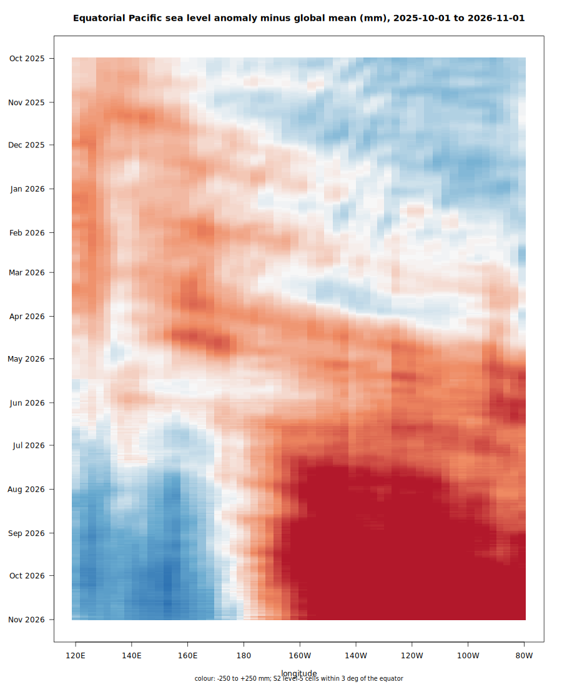

How daily sea level grids become the cell sums this site is computed from.
trend.sla is the second deployment of grist, the engine extracted from trend.sst. The summarization is identical: every source pixel is assigned whole to the S2 level-5 cell containing its centre, nothing is warped or resampled, and each cell keeps four sums per day (n, sumw, sumwx, sumwx2) from which the mean and variance of any union of cells and days follow exactly. The full explanation, with figures and references, is on the trend.sst Method page.
Copernicus Marine global gridded L4 sea surface heights (DUACS multi-mission altimetry), daily on a 0.125° grid, variable sla: sea level anomaly relative to the product's 1993–2012 reference. A level-5 cell holds roughly 5,000–6,500 of these pixels. grist reads the public ARCO Zarr stores directly, with no download.
Two products are interleaved into one daily record: the delayed-time reprocessing wherever it exists (1993 to a few months ago), then near-real-time after it. When the delayed-time record extends, or a near-real-time day is reissued, grist sees that date's source change and recomputes exactly that date. The near-real-time tail is marked provisional on the Status page.
The stored sums are in metres, as in the source. This site shows millimetres, and trends per year (mm/yr), the usual convention for sea level. Code from the Explorer's Get the data reads the sums directly, so its means are in metres.

Two independent checks, both reproducible from the repository:
| check | expectation | result |
|---|---|---|
| one date, 1997-11-15 | peak of the 1997/98 El Niño: positive anomaly along the central-eastern equatorial Pacific, negative in the west | passed (also shows the late-1997 Indian Ocean Dipole) |
| daily global mean, whole record | the published altimetry sea level rate, about 3.1–3.3 mm/yr | 3.16 mm/yr, with the expected acceleration, annual cycle and El Niño peaks |
One open question is recorded rather than hidden: the global mean averages about +25 mm over 1993–2012 rather than about zero, which may be the product's reference convention and is still to be confirmed against its documentation.
Data: E.U. Copernicus Marine Service Information. This work uses resources of the Pawsey Supercomputing Research Centre, with funding from the Australian Government and the Government of Western Australia: the backfills run on Pawsey systems and the sums are served from Pawsey object storage.